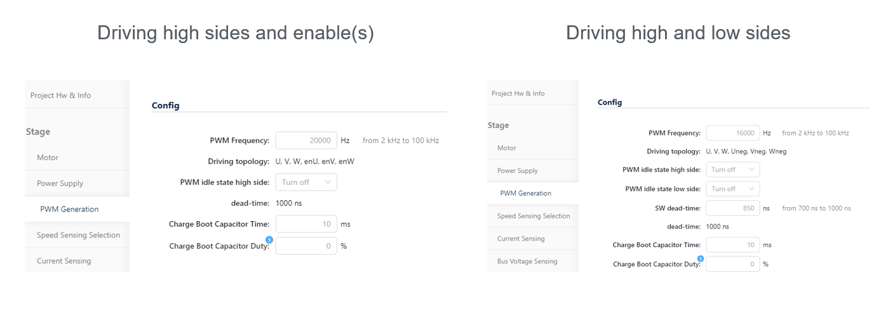

|
STM32 Motor Control SDK MCFW-6.4.1
Software Development Kit to build applications driving PMSM Motors with STM32
|
|
STM32 Motor Control SDK MCFW-6.4.1
Software Development Kit to build applications driving PMSM Motors with STM32
|
Prev: A priori determination of flux and torque current PI gains ↤| Table of Contents |↦ Next: Overmodulation
Dead-time is the delay between PWM Channel signal and its complementary signal. Refer to AN4013 Introduction to timers for STM32 MCUs.
Depending on the PWM power management hardware variant, dead-time parameter settings are:

Dead-time comes from hardware component characteristics and is defined by the "dead-time" parameter in the workbench user interface. This fixed "dead-time" value is defined in the description board json file as the "deadTime" parameter. This value is used on software as HW_DEAD_TIME_NS define and used for sampling time position computation.
Dead-time is handled by software and defined by the "SW dead-time" parameter in the workbench user interface. "SW dead-time" is defined as a range of values. The range lower limit comes from hardware component characteristics and the upper limit is defined to ensure performance. The lower limit is defined by "minDeadTime" value from the description board json file and the upper limit by "deadTime" value from the description board json file. The upper limit is shown as "dead-time" parameter in the workbench user interface. This "SW dead-time" value is used on software in SW_DEADTIME_NS define for sampling time position computation and TIMER dead-time register setting.
Driving a half-bridge based on N-channel MOSFETs or IGBTs requires providing to the high-side switch a gate voltage greater than the main supply. Refer to AN5789 Considerations on bootstrap circuitry for gate drivers for Bootstrap circuitry and feature description.
Prev: A priori determination of flux and torque current PI gains ↤| Table of Contents |↦ Next: Overmodulation